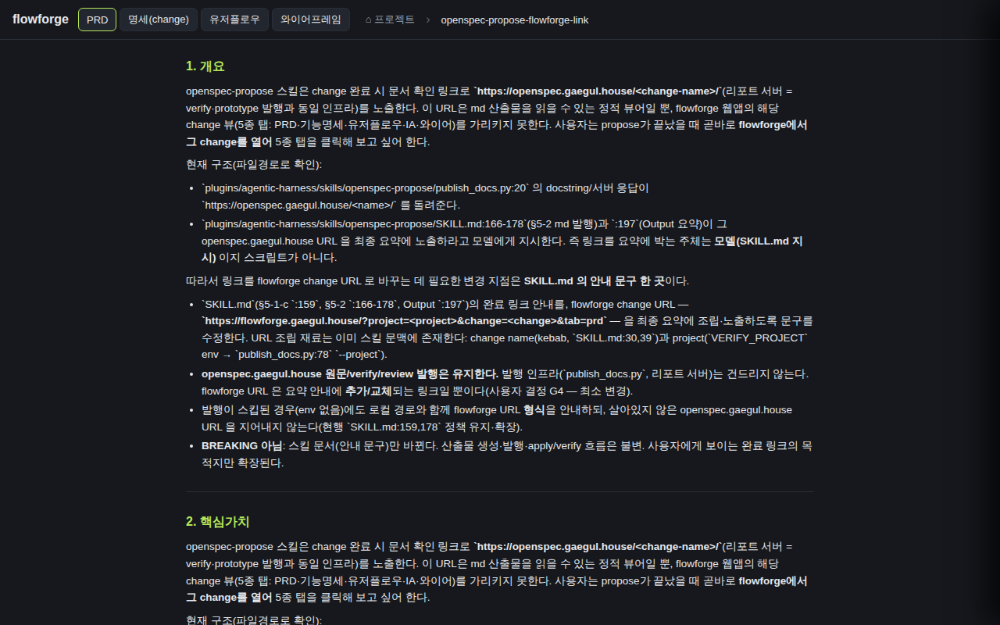

검증일: 2026-07-13T15:22:48+09:00 · 환경: docs 레이어만 적용(SKILL.md 스킬 문서 수정 change) — server/web/android/ios 전부 SKIPPED(적용 불가: flowforge 코드 무변경). 검증 수단=문서 grep/diff + 선행 의존 라이브 딥링크 실측. · run: run-20260713-1522 · commit d761d0a7 (dirty)
PASS 4 · FAIL 0 · 검증 안 함 0 · SKIPPED 0
| Requirement | Scenario | Layer | 검증 수단 | 탐지 근거(basis) | 결과 | 증거 |
|---|---|---|---|---|---|---|
| 완료 요약에 flowforge change 딥링크 노출 | 발행 성공 시 flowforge 링크와 openspec 원문 병기 | — | grep SKILL.md — published:true 분기에 flowforge 1차 링크 + openspec.gaegul.house 원문 병기 지시 | 소스 SKILL.md:194-195,220. 캐시 1.1.8 동일. | ✓ PASS | SKILL.md:194 '**flowforge change URL 을 1차 링크로 노출**하고,' / :195 'openspec.gaegul.house 원문 링크(...)를 **함께 병기**한다' / :220 발행 성공 시 openspec 병기 지시. 소스=캐시 diff 완전일치. |
| 완료 요약에 flowforge change 딥링크 노출 | 발행 스킵 시 flowforge URL 형식과 로컬 경로 안내 | — | grep SKILL.md — skipped:true 분기에 로컬 경로 + flowforge URL 형식 + 'openspec URL 지어내지 않는다' 지시 | 소스 SKILL.md:198-200,220. 캐시 1.1.8 동일. | ✓ PASS | SKILL.md:198 '**skipped:true (env 없어 발행 스킵)**: 로컬 산출물 경로(openspec/changes/<name>/)와 함께' / :200 'openspec.gaegul.house 원문 URL 을 지어내지 않는다(그 링크는 유효하지 않다 — 로컬 경로만 적는다).' |
| 완료 요약에 flowforge change 딥링크 노출 | project env 부재 시 change-only 링크로 폴백 | — | grep SKILL.md — VERIFY_PROJECT 미설정 시 ?project= 생략 폴백 지시 | 소스 SKILL.md:189,220. 캐시 1.1.8 동일. | ✓ PASS | SKILL.md:189 '**VERIFY_PROJECT 미설정(project 값 없음) 폴백**: ?project= 파라미터를 통째로 **생략**하고' / :220 '(VERIFY_PROJECT 미설정 시 ?project= 생략)'. AND절=빈 project= 값/리터럴 <project> 플레이스홀더 잔존 금지. |
| 완료 요약에 flowforge change 딥링크 노출 | 선행 의존(flowforge 딥링크 라우팅) 미배포 시 안내 | web | grep design.md 선행 의존 리스크 명시 + 라이브 딥링크 실측(선행 change 실배포 여부) | design.md:50,53-55,60 선행 의존 섹션 + 라이브 GET 200 실측. | ✓ PASS |  |
| Requirement | null | 빈값 | 잘못된타입 | 경계값 | 에러경로 | 동시성 | 대량 | 특수문자 | 판정 |
|---|---|---|---|---|---|---|---|---|---|
| 완료 요약에 flowforge change 딥링크 노출 | ✓ | ✓ | N/A | N/A | ✓ | N/A | N/A | ✓ | ✓ 충분 |
✓=covered · N/A=해당없음(사유 hover) · ✗=missing. happy-path만이면 검증 불충분 → 최종 FAIL 차단.
| Layer | 상태 | ran | passed | failed | 근거/사유 |
|---|---|---|---|---|---|
| docs | ✓ PASS | 4 | 4 | 0 | 이 change는 SKILL.md 스킬 문서 수정만 — 실행 코드 없음(spec TDD Plan §5-1). 검증 수단=grep/diff 문서 정합성 + 선행 의존 라이브 딥링크 실측. |
| server | – SKIPPED | 0 | 0 | 0 | 적용 불가 |
| web | – SKIPPED | 0 | 0 | 0 | 적용 불가 |
| android | – SKIPPED | 0 | 0 | 0 | 적용 불가 |
| ios | – SKIPPED | 0 | 0 | 0 | 적용 불가 |
✓ PASS 통과
archiveGate.open = true (PASS일 때만 true). verify.json이 이 값을 archive 게이트에 전달.
{kind=link}